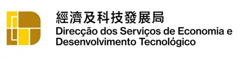

Organizer & Guiding Units

Organizer

Guiding Unit
Innovation × Policy × Capital
The Macao Innovation and Capital Forum 2025 (MIC 2025), a featured event of Macao Science and Technology Week, is a Macao-led forum focusing on the Guiding Fund. It integrates institutional innovation, technology transfer, and capital, connecting project teams, investors, and enterprises from China, Brazil, and Portugal to build a sustainable cross-border cooperation framework.
Industrial Development Fund & Tech Transfer Guiding Fund — driving diversification and R&D industrialization.
240,000 m²; up to MOP 10M incubation funding; 60-month rental subsidies.
Expanded fund types, re-domiciliation, and streamlined setup to boost competitiveness.
High-end and senior professionals with flexible residence & family benefits.
Matchmaking, policy insights, and industry tours
One-on-one blind talks delivering candid insights
100+ enterprises from smart tech, eco-materials, e-commerce, and digital transformation
December 5, 2025
The Venetian Macao
120–150 participants
Organizer
Guiding Unit
Connecting Macao’s policy advantages with the Chinese market — inviting participants, partners, and sponsors to co-create a Technology Cooperation Day and share international VC opportunities.